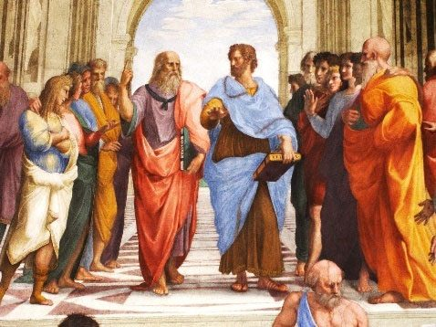
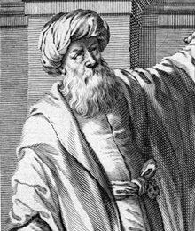
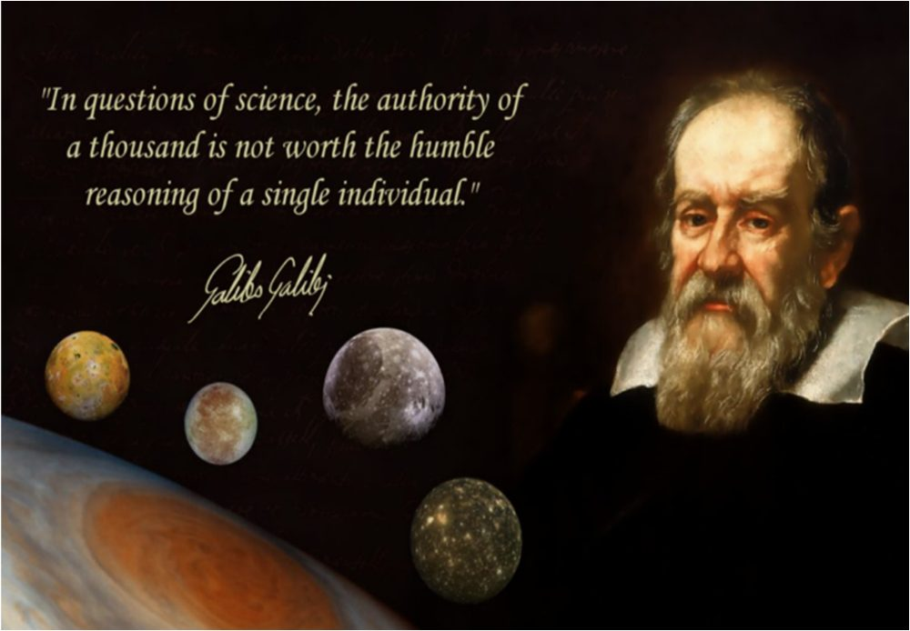
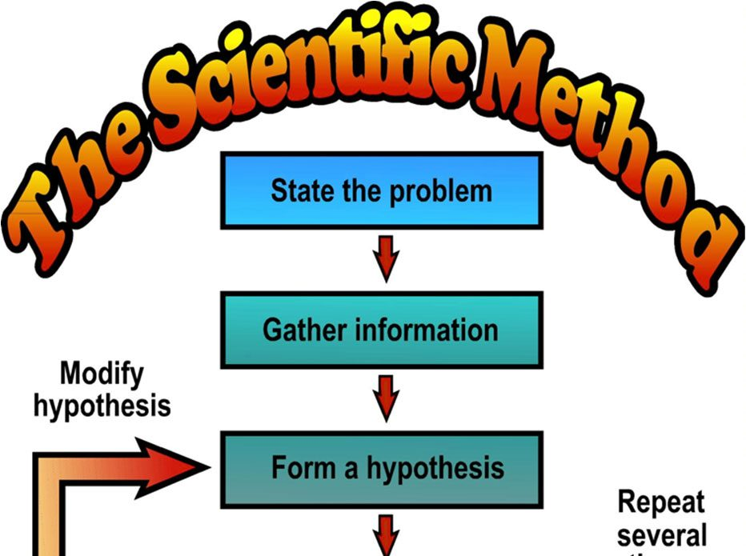
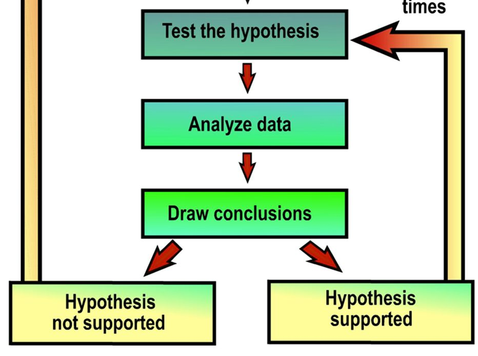

2.1 History
The scientific method developed gradually over many centuries. It can't be credited to a single person or time period: it evolved through the contributions of many thinkers and scientists.
Ancient Greece (6th to 4th centuries BCE)
- Early philosophical inquiries into the natural world began with thinkers like Aristotle.
- Aristotle's approach to observation and classification laid the groundwork for systematic inquiry.

Islamic Golden Age (8th to 14th centuries)
- Islamic scholars such as Alhazen (Ibn al-Haytham) emphasised the importance of observation and experimentation.
- They made significant contributions to the understanding of optics and the scientific method.

Medieval and Renaissance Europe (12th to 17th centuries)
- The scholastic tradition in medieval Europe involved systematic questioning and debate.
- The Renaissance revived interest in classical learning, and the works of ancient Greek and Roman thinkers became influential.
- Copernicus proposed a heliocentric (Sun-centred) model of the solar system in the 16th century, challenging the geocentric (Earth-centred) view.
The Scientific Revolution (17th century)
- Galileo Galilei emphasised experimentation and mathematical analysis in understanding the natural world.
- Johannes Kepler developed laws describing planetary motion, and Isaac Newton formulated the laws of motion and universal gravitation.
- The scientific method as a systematic approach to investigation gained momentum during this period.

The Enlightenment (18th century)
- Thinkers such as Francis Bacon and John Locke argued that observation and reason are the foundation of knowledge.
- The scientific method as a systematic, evidence-based approach became more widely accepted.
19th and 20th centuries
Advances in biology, chemistry and physics continued to refine the scientific method. Experimental design, statistical methods and peer review further established it as a rigorous and reliable approach.
The scientific method continues to evolve, and it remains a dynamic and essential tool for scientific inquiry and discovery.
Match each period with a key development.
2.2 The Scientific Method
The scientific method is a systematic approach to inquiry and problem-solving used in scientific research. It gives a structured, objective way to investigate phenomena, answer questions and test hypotheses. The scientific method is:
- Objective: results and conclusions are based on evidence rather than personal opinion.
- Systematic: it follows a structured series of steps: observation, hypothesis, experimentation, data collection, analysis and conclusion. This allows clarity and reproducibility.
- Testable: hypotheses are written so they can be tested, and either supported or refuted by evidence.
- Reproducible: experiments can be repeated to get consistent results. This adds credibility and lets other researchers check and build on findings.
- An accumulation of knowledge: by building on previous findings and refining hypotheses, the scientific community advances understanding over time.


Match each feature with its meaning.
Science Investigations
As part of the scientific method, we conduct investigations to answer questions about the Universe. A scientific investigation is structured like this:
| Stage | Sections |
|---|---|
| Questioning and predicting | Background theory; research question; hypothesis |
| Planning and conducting | Variables; materials and equipment; method; risk assessment |
| Processing and analysing data and information | Qualitative data; quantitative data; graphing; analysis and discussion of results; conclusion |
| Evaluating | Sources of error and suggested improvements; strength of conclusion; alternative explanations |
| Communicating | Appropriate scientific language, conventions and representations; a formal report or presentation; references in an appropriate style (Harvard or APA) |
You may not need to complete every section for every task, but it is important to understand what each section requires.